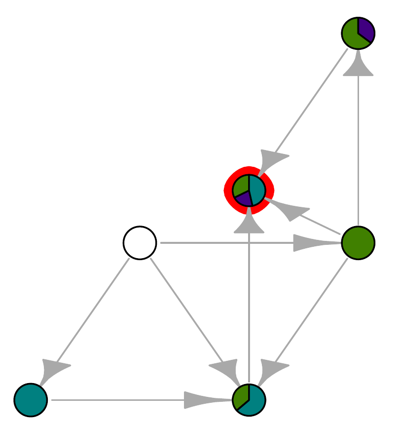

In this paper, we study in detail the structure of the global attractor for the Lotka–Volterra system with a Volterra–Lyapunov stable structural matrix. We consider the invasion graph as recently introduced in Hofbauer and Schreiber (J Math Biol 85:54, 2022) and prove that its edges represent all the heteroclinic connections between the equilibria of the system. We also study the stability of this structure with respect to the perturbation of the problem parameters. This allows us to introduce a definition of structural stability in ecology in coherence with the classical mathematical concept where there exists a detailed geometrical structure, robust under perturbation, that governs the transient and asymptotic dynamics.
This figure should have appeared in the published paper, but it didn’t. A mystery.

@article{Almaraz2024,
title = {Structural Stability of Invasion Graphs for {{Lotka}}--{{Volterra}} Systems},
author = {Almaraz, Pablo and Kalita, Piotr and Langa, Jos\'e A and Soler--Toscano, Fernando},
date = {2024-06-17},
journaltitle = {Journal of Mathematical Biology},
volume = {88},
number = {6},
pages = {64},
doi = {10.1007/s00285-024-02087-8}
}